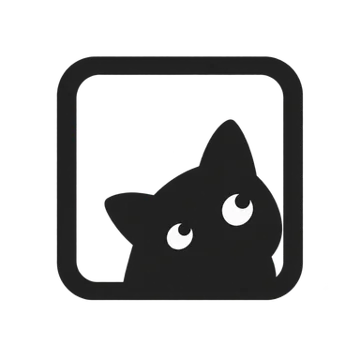
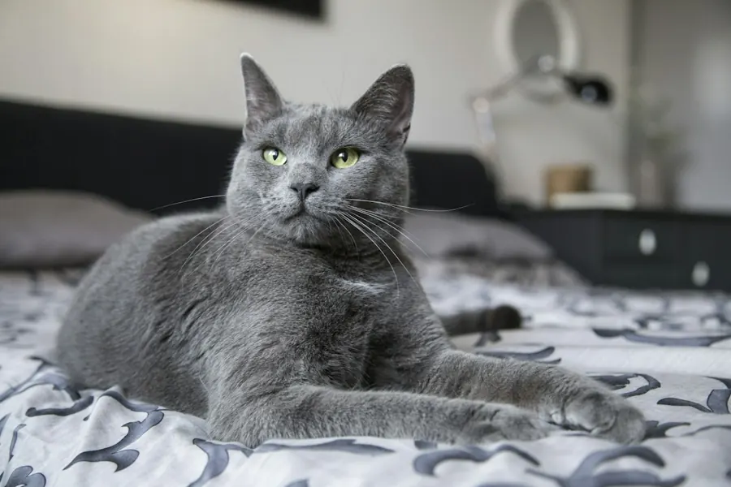
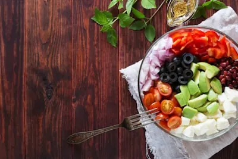
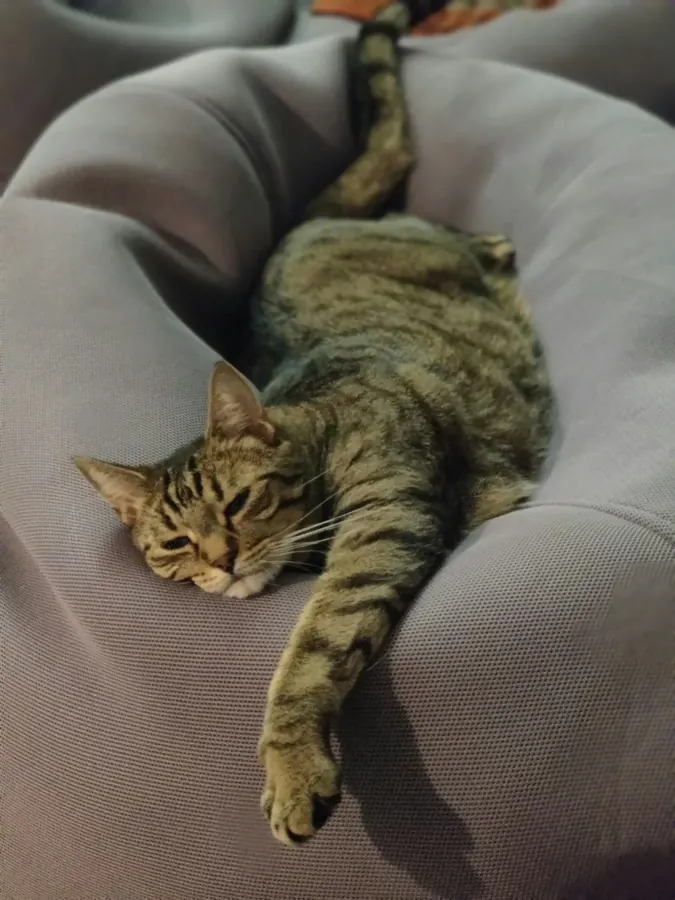
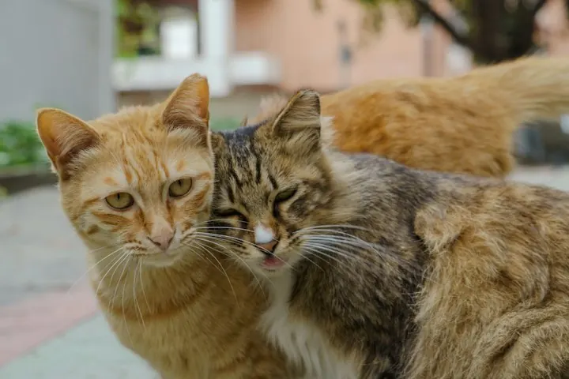
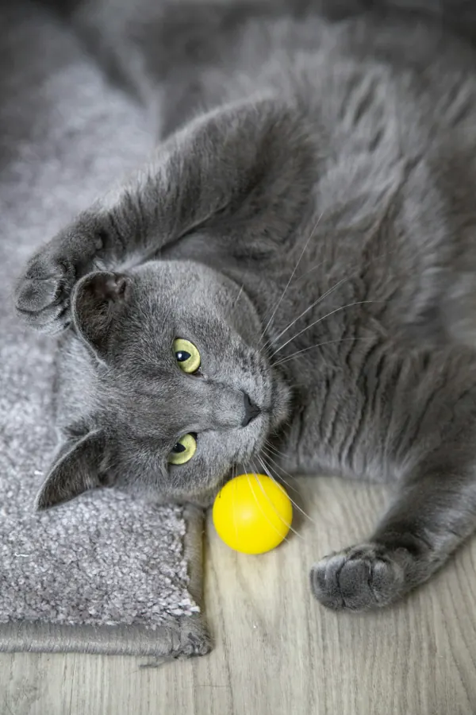
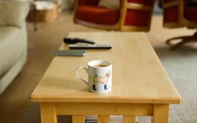
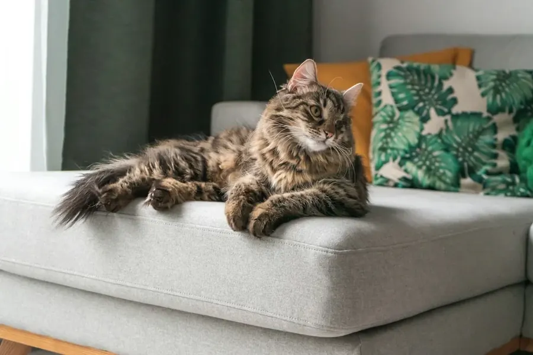
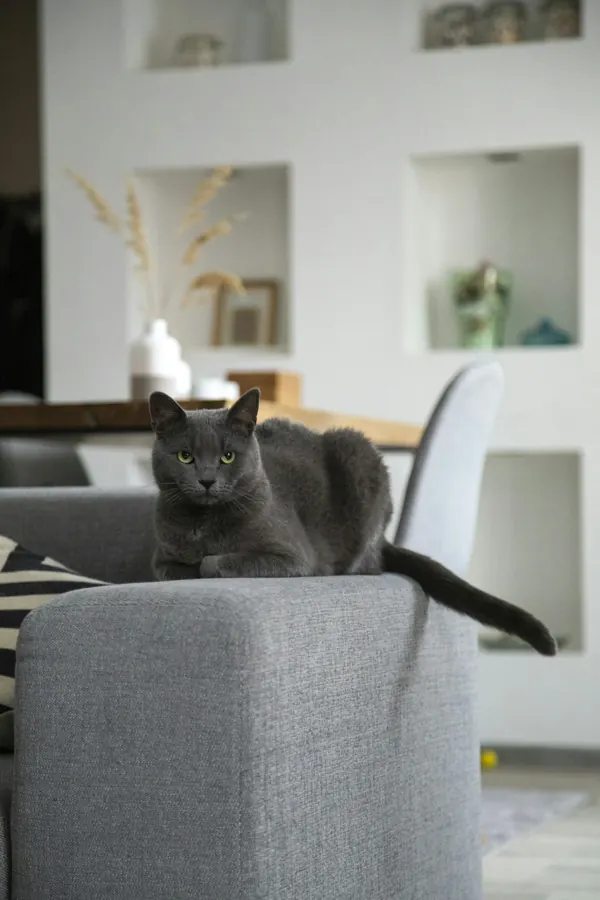
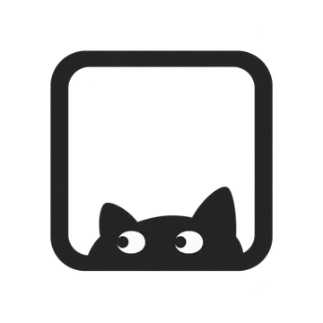

写真に、自分だけのメモ
写真に、その日の出来事を書き添えられます。メモは自分だけのもので、まどの相手には届きません。体重を一緒に残すこともできます。
猫と暮らす人のための iPhoneアプリ
ねこのまどは、iPhoneの写真から猫の写真を見つけて、アルバムとホーム画面のウィジェットに出すアプリです。お気に入りの1枚は「まど」で、家族や猫友に届けられます。

写真へのアクセスを許可すると、iPhoneの中にある猫の写真を見つけて、一覧にまとめます。撮るたびに整理しなくても大丈夫です。
猫が写っているかどうかは、iPhoneの中で見分けます。写真をサーバーへ送って調べることはありません。
写真アプリに「うちの子」アルバムを作って、猫の写真をまとめます。元の写真を動かしたり、消したりはしません。
月ごとのまとめや季節のムービー、テーマ別のアルバムで、懐かしい1枚に出会えます。
見つけるのは、このiPhoneに保存されている写真です。iCloud写真で本体がiPhoneにない写真は、見つからないことがあります。








「まど」は、名前を付けた小さな場所です。家族や猫友を招待して、猫の写真を1枚ずつ届け合えます。離れて暮らす家族にも、今日のうちの子を。
「実家のまど」のように名前を付けて、届けたい相手を招待します。
写真を選んで、短いひとことを添えて届けます。写真だけでも届けられます。
届いた写真は、相手のホーム画面のウィジェットにも出せます。ハートで「見たよ」を返せます。
公開のタイムラインや検索、フォローはありません。知らない人とつながることもありません。
写真とひとことは、まどのメンバーだけが開ける鍵で暗号化して届けます。運営者は中身を見るための鍵を持っていません。写真に記録された位置情報は取り除いて送ります。
届ける写真は、送る前にiPhoneの中で、不適切な内容でないかを確かめます。困ったときは、相手をブロックしてまどを終わらせられます。
写真に、その日の出来事を書き添えられます。メモは自分だけのもので、まどの相手には届きません。体重を一緒に残すこともできます。
猫の写真と情報から、困ったときに見せる画面や紙をつくれます。
ねこのまどは、写真をできるだけiPhoneの外に出さないように作っています。
猫が写っているかどうかは、iPhoneの中で判定します。写真ライブラリをサーバーへ送りません。
元の写真を消したり、ほかの場所へ移したりしません。
まどに届くのは、自分で選んで「届ける」を押した写真だけ。暗号化して届けます。
広告は出しません。写真や使い方の記録を、広告や販売、AIの学習に使いません。
入れたらすぐ使えます。申し込みもカードの登録もいりません。14日が過ぎても、写真・まど・メモは消えません。
15日目からも、ずっと無料
0円

ねこのまど Plus
980円 / 月
Plusはアプリの中から、App Storeで申し込みます。14日間の無料期間に申し込みは不要で、期間が終わっても自動で料金がかかることはありません。
価格は税込みです。正式な料金と内容は、公開時のApp Storeの表示に従います。
「写真」アプリにも、ペットのアルバムや写真のウィジェットがあります。ねこのまどは猫の写真を楽しむことに絞って、猫の写真だけのアルバムやウィジェット、家族に1枚ずつ届ける「まど」を用意しています。
今ある写真をそのまま使うので、写真を移したり、「写真」アプリをやめたりする必要はありません。
元の写真を消すことはありません。まどに届くのは、自分で選んで「届ける」を押した写真だけです。猫の判定のために写真をサーバーへ送ることもありません。
はい。まどを使うには、相手にもiPhoneと「ねこのまど」が必要です。招待されて入るのは無料です。
いいえ。招待されてまどに入る人は、ずっと無料です。自分の猫のウィジェットやアルバムも続けたい家族は、Plusを買った人と同じAppleのファミリー共有に入っていれば、追加の支払いなしでPlusを使えます。
何も消えません。見つけた猫の写真、アルバム、お気に入り、メモ、まど、届いた写真は、そのまま見られます。
止まるのは、新しく増えるものだけです。自分の猫のウィジェットは最後の1枚のまま、アルバムは新しくまとまらず、新しいメモを書けなくなります。続けたくなったら、その場でPlusを始められます。
届いた写真は、届いてから最長90日、このiPhoneの中で見られます。届いた写真がとても多いときは、古いものから先に消えることがあります。
残したい写真は、写真アプリに保存できます。
写真を届けるには、iPhoneの「設定」→「プライバシーとセキュリティ」→「センシティブな内容の警告」をオンにしてください。届ける前に、iPhoneの中で写真を確かめるために使います。
はい。猫が何匹いても、猫の写真として見つけます。猫ごとに分けたいときは、猫のプロフィールを作って、写っている猫を選べます。
iOS 17.1以降のiPhoneで使えます。Androidには対応していません。
ねこのまどは、App Storeでの公開に向けて準備しています。
App Storeで公開準備中